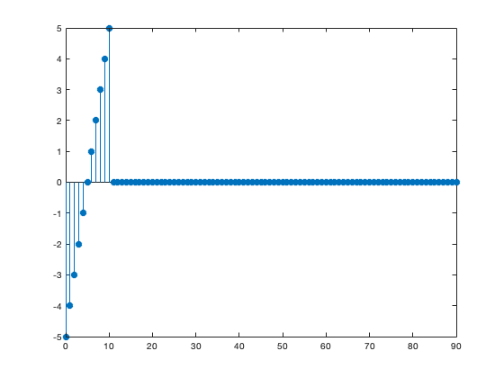
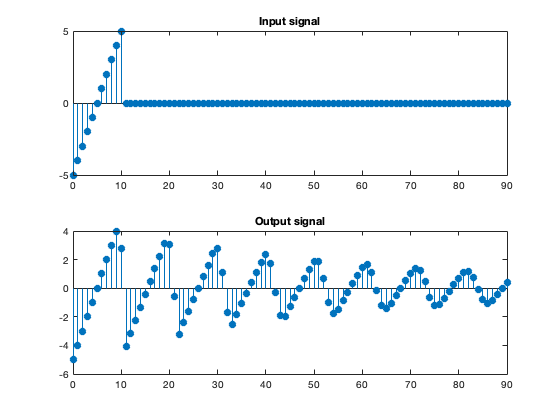
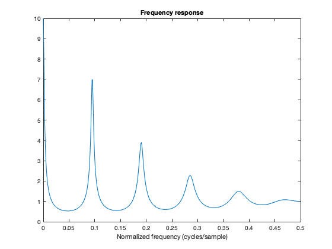
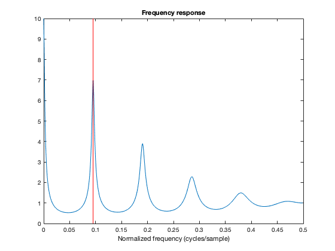

KS_demo_1
Illustration of the Karplus-Strong method
Contents
Define filter
clear
% Karplus-Strong paramters
K = 0.9;
N = 10;
a = [1 zeros(1, N-1) -K/2 -K/2];
b = 1;
Define input signal
% input signal x = [-N/2:N/2 zeros(1, 80)]; L = length(x); figure(1) clf stem(0:L-1, x, 'filled')
Computer output of filter
% output signal
y = filter(b, a, x);
Display output signal
figure(2) clf subplot(2, 1, 1) stem(0:L-1, x, 'filled') title('Input signal') subplot(2, 1, 2) stem(0:L-1, y, 'filled') title('Output signal')
Frequency response of filter
[H, om] = freqz(b, a); f = om/(2 * pi); figure(2) clf plot(f, abs(H)) xlabel('Normalized frequency (cycles/sample)') title('Frequency response')
f1 = 1/(N+0.5) line([f1 f1], [0 10], 'color', 'red', 'linewidth', 1)
f1 =
0.0952
 Pole-zero diagram
figure(1) clf zplane(b, a)